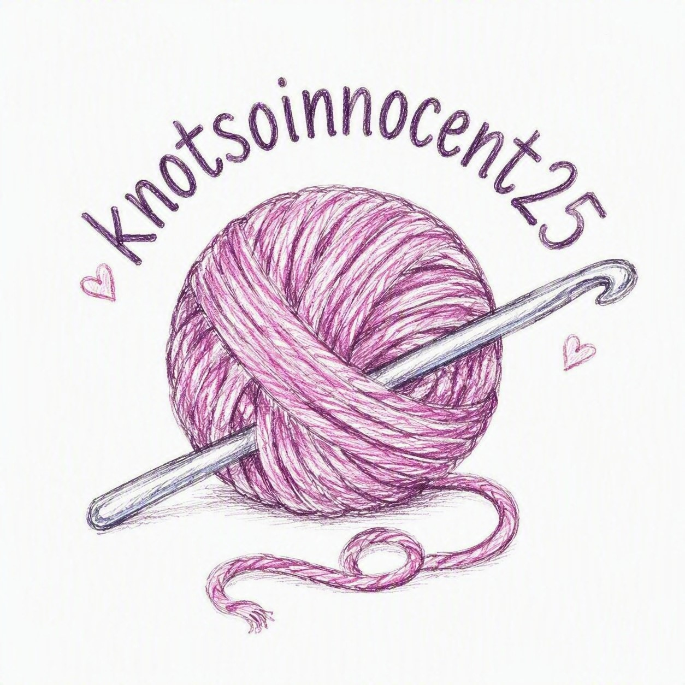

🧶 Welcome to My Crochet Corner 🧶

Hello! One of my favourite hobbies is crochet, followed closely by finding bargains on wool! I enjoy creating handmade items such as plushies, accessories, and gifts for family and friends.
Why I Love Crochet
Crochet allows me to be creative while also helping me relax. I love choosing different colours, learning new stitches, and seeing a project come together from a simple ball of yarn.
My Crochet Work
I share photos of my crochet projects on Instagram. Feel free to visit my page and see what I've been making!
Visit My Instagram Page🌟 Crochet Goals 🌟
- Complete a C2C blanket
Sell my first handmade items- Sell more handmade items
- Carry out more pattern tests
- Reach a wider audience
One of My Favourite Projects
Smurfette
This is a paragraph that I will complete later. The intent is to demonstrate styling with CSS and particularly, inline styling of a paragraph within a border and associated padding and margins.